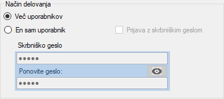
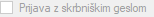
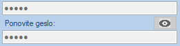
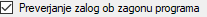
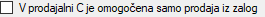
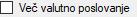

Nastavitve v podatkovni bazi
Program, ki vedno deluje tako, da ga uporablja več uporabnikov, mora ob zagonu zahtevati prijavo.
V programu Tangenta je to izvedeno z dialogom, kjer se vpiše uporabniško ime in geslo.
Na ta način postane programu Tangenta poznano, kdo ga uporablja in koga mora izpisati na dokumentih (računih, predračunih itd..)
kot avtorja.
Prijavljanje v program jemlje čas, in je lahko uporabniku odveč v kolikor program uporablja sam, oziroma je poslovanje podjetja takšno, da se mora izpisati na dokumentih vedno ena in ista odgovorna oseba. Program Tangenta želi biti maksimalno priročen in uporaben tudi za mikro podjetja in samostojne podjetnike. Da bi program Tangenta deloval učinkovito, nam daje na razpolago možnost, da lahko sami izberemo večuporabniški ali enouporabniški Način delovanja.
Prijavljanje v program jemlje čas, in je lahko uporabniku odveč v kolikor program uporablja sam, oziroma je poslovanje podjetja takšno, da se mora izpisati na dokumentih vedno ena in ista odgovorna oseba. Program Tangenta želi biti maksimalno priročen in uporaben tudi za mikro podjetja in samostojne podjetnike. Da bi program Tangenta deloval učinkovito, nam daje na razpolago možnost, da lahko sami izberemo večuporabniški ali enouporabniški Način delovanja.

Nastavitve delovanja programa Tangenta v podatkovni bazi imajo prednost pred lokalnimi nastavitvami programa. Nastavitve delovanja v podatkovni bazi določajo način delovanja programa za vse instalacije programa Tangenta na vseh računalnikih in vseh uporabnikih, ki se povežejo na izbrano podatkovno bazo.
Način delovanja
Prijava z skrbniškim geslom
Prijava z skrbniškim geslom pomeni, da se boste morali
ob zagonu vedno prijaviti z skrbniškim geslom.
Izbira te opicije je dodana kot dodatna varnost, da ne bi
nezaželjena oseba uporabila programa Tangenta in kaj spremenila.
Skrbniško geslo
V kolikor ste izbrali enouporabniški način delovanja
morate vnesti posebno skrbniško geslo, ki bo poznano samo vam
ali vašim zaupnikom.
Skrbniško geslo preprečuje, da bi lahko kdorkoli, ki ne pozna vašega skrbniškega gesla, spreminjal nastavitve programa, tiskalnikov itd..
Trenutno privzeto skrbniško geslo je 12345, za katerega vam priporočamo, da ga spremenite!
Gumb za časovno omejeni prikaz gesla
Geslo se nam na ekranu izpisuje samo z zvezdicami, da nekdo za našim hrbtom nebi
izvedel kakšno geslo smo vnesli. Ker pa je to lahko tudi omejujoče in ne vidimo dejanskih znakov gesla
imamo na voljo gumb, ki je prikazan zgoraj. S klikom nanj se bo vnešeno geslo izpisalo takšno kot je za nekaj sekund.
Preverjanje zalog ob zagonu programa
V kolikor odkljukamo v kvadratek levo od napisa:"Preverjanje zalog ob zagonu programa", bo
program ob vsakem zagonu preveril zaloge artiklov v prodajalni C!
V kolikor se nekemu artiklu v prodajalni C bliža konec roka uporabe, ali pa je ta že potekel,
nas bo program o tem opozoril z posebnim dialogom.
Prodaja samo iz zalog
V kolikor odkljukamo kvadratek levo od napisa "V prodajalni C je omogočena samo prodaja iz zalog",
bo prodjalna C delovala tako, da nam bo omogočena samo prodaja tistih artiklov, ki so v zalogah.
V nasprotnem primeru, pa lahko prodajamo tako iz zaloge kot tudi tiste artikle, ki so vnešeni a niso v zalogah!
Več valutno poslovanje
Več valutno poslovanje v smislu, da lahko en račun izstavimo v eni valuti, drugega pa v drugi,v tej verziji programa ni dokončno podprto in realizirano,
pač pa je realizirano na nivoju podatkovne baze.
Če delate več valutno, odprite za vsako valuto drugo podatkovno bazo tako, da ob nastavitvah določite novo valuto.
Slednje je tudi zelo smiselno, saj z neko stranko običajno poslujemo vedno v eni in isti valuti.